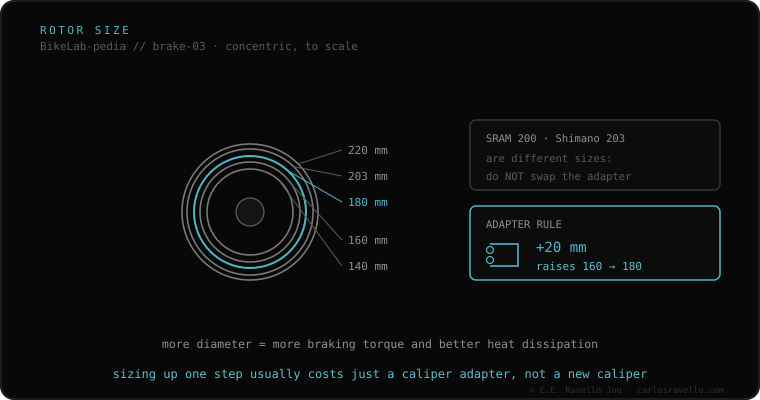

Three facts decide which rotor fits your bike. One, the mounting, set by your hub: 6-bolt (universal) or Center Lock (splined). Two, the maximum size, set by your frame/fork (don't go bigger than they certify). Three, if you size up from stock, the correct caliper adapter: +20 mm for 160→180, +43 mm for 160→203. And respect the brand: SRAM uses 200 mm and Shimano 203 mm, the adapters don't cross.
Buying a rotor without these three facts ends in one that won't mount, won't center or won't fit. Here's the exact order to get it right.
First confirm your hub mounting: if the rotor is held by six bolts, buy a 6-bolt rotor; if by a central nut, Center Lock (or use a hub adapter). Second, check the maximum size your frame and fork allow. Third, if you want a bigger size than current, work out the caliper adapter by the jump (+20 = 160→180, +43 = 160→203) and respect your brake's brand (200 SRAM / 203 Shimano).

The rotor fits if its mounting matches your hub (or you use a Center Lock-to-6-bolt adapter) and its size respects the frame/fork maximum. To size up with the same caliper, the correct adapter by jump and brand. The fluid and caliper mount don't depend on the rotor.
If you don't know which mount, rotor or fluid your brake uses, send us the case. Real diagnosis, nothing to sell you. Message us on WhatsApp
Look at how the current rotor mounts: six bolts = buy 6-bolt; central splined nut = Center Lock. To cross, there's a Center Lock-to-6-bolt adapter.
A +20 mm caliper adapter. For 160→203 it's +43 mm. And respect the brand: 200 on SRAM, 203 on Shimano.
No: respect the maximum size your frame and fork certify. Exceeding it can fracture the structure.